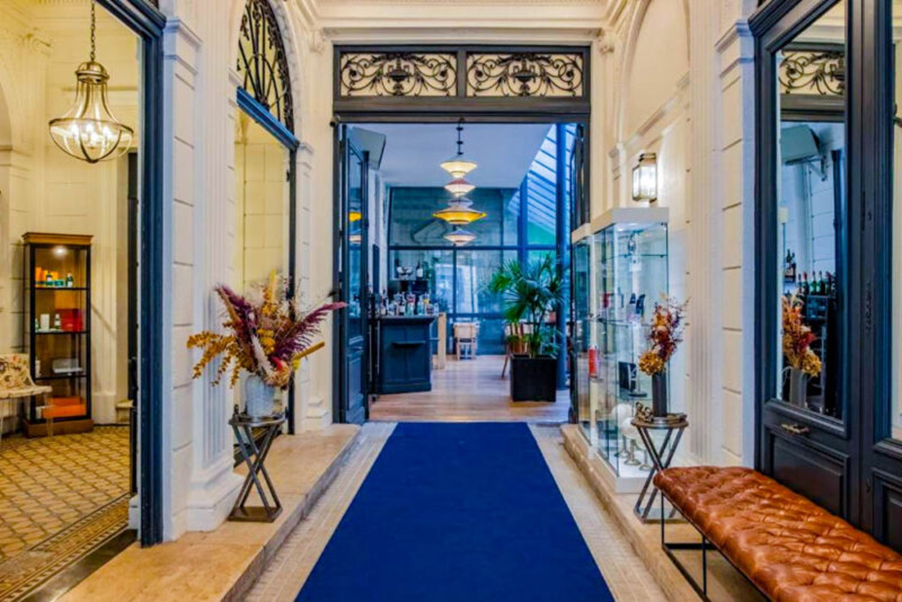

Introduction to Hospitality: Theoretical Approaches and Concepts
Name: Agnelo Jaques | Student Number: L4093108
Course: BA Hospitality Management
I arrived at Paris the city of lights I landed at the Charles de Gaulle or Orly Airport where there was clear vision that the hospitality industry in France is very good. I started my journey on the historic ile de la cite, here i found the famous Notre-Dame Cathedral. It was under restoration, but one can still admire its beauty and then I explored the nearly by landmarks like the Eiffel tower, louvre museum and arc de triomphe. Another place to visit is Sainte-Chapelle which is just a short walk away, it is known for its magnificent stained-glass windows that create a kaleidoscope of colours.
Tourism and Hospitality statistics: According to statistics France is ranking as one of the world’s top tourist destinations consistently. Frace accommodates hundred million international tourists annually, this contributing to the economic vitality of the hospitality industry. The year that saw the highest number of international tourists was in 2019 which accounts for 90.9 million people. Disneyland in Paris is the most visited attraction which accounted for fourteen million yearly visitors. France’s travel and tourism market size shows huge potentials of increment and is expected to reach $20.03 billion in 2024. Economic Contribution: The hospitality industry, which includes hotels, restaurants, resorts, travel services, and events, accounts for around 8% of France’s GDP and employs millions across urban and rural regions. The most famous attractions like the Eiffel tower, the Louvre, and destinations such as Provence, the French Riviera, and wine regions draw tourists globally this has helped in enhancing the country’s hospitality landscape. Hotels contribute to the largest proportion of France’s travel and tourism market, with a market volume of $10.69 billion in 2024.
(Piva, 2024)
I will also be telling about the major sectors within the hospitality industry in Farnce. Accommodation in France First sector is Accommodation that refers to budget hotels, hostels and chateaux this contributes majorly to the revenue. France also has luxury hotels such as Le Boutique Hotel & Spa is a boutique. Le Boutique Hotel & Spa is a boutique is a five star hotel that offers history of the country, heritage, comfort and luxury all under one roof. One will appreciate and be mesmerised by the high ceilings and tall windows of the magnificent rooms. Each room has a unique design, but one will also find wooden parquet flooring in the bedroom area and Pyrenean slate in the bathrooms. Each room has unique decor that’s complemented by unique artwork, all of which have been personally selected by the owners. And those owners aren’t some large corporations, but a father and daughter team named Christophe and Anais who simply fell in love with the property and then converted it into their dream boutique hotel
(intelligence, 2024)
France is well known for its cuisine and French food such as baguettes, croissants and cheese. when I went to France, is that food is an experience to savour, not something you do quickly. Each region in France is well known for its own distinct culinary traditions and specialities that are widely influenced by its geography and history. The gastronomy is world-renowned, with restaurants, cafes, and patisseries playing a crucial role in both urban and rural settings. Michelin-star restaurants highlight the prestige, while small eateries and cafes showcase regional delicacies. In 2010, UNESCO created Intangible Cultural Heritage , a list that recognises knowledge, cultural practices and traditions instead of physical sites. The gastronomic meal of French was added to this list the name of the list is ‘Le repass gastronomique des Français ‘. This recognition was because the French cuisine is considered as a social custom that celebrates togetherness, pressurises on pleasure of taste and maintains the balance between humans and the products of the nature. The ritual of eating in France includes things like setting the table, selection of dishes and matching the wine with food and the special emphasis on sharing and enjoying meals together. Oysters are a very popular food in France, especially during the Christmas season. This popularity comes from King Henri IV, reigning from 1553 to 1610, reportedly consumed up to 300 oysters in a single sitting. And Louis XIV had them delivered daily to Versailles. The famous American Chef and author by the name Julia Child taught the American housewife how to cook French food. I was very lucky to eat at the very restaurant, La Couronne, where Julia ate and they still serve the same menu thus preserving history.
(Lang, 2023)
Tourism services contribute significantly to the hospitality sector, supported by France's excellent transportation network. Events like the 2024 Olympics, Cannes Film Festival, and Tour de France attract millions of visitors each year.
(Coyle, 2024)
Cannes has been hosting the prestigious Cannes Film Festival since 1946, drawing international celebrities and creating significant economic benefits through increased accommodation and dining demand.
(Podrabinek, 2023)
The 2024 Summer Olympics boosted tourism and employment in France, creating up to 247,000 jobs and generating over €10 billion in economic impact.
(Parkins, 2024)
Located 32 km from Paris, Disneyland Paris is Europe’s top tourist attraction. Since opening in 1992, it has hosted over 250 million visitors and created thousands of jobs.
(departement, n.d.)
The Eiffel Tower, one of the most recognized landmarks worldwide, draws millions of visitors yearly. During the 2024 Olympics, it served as a spectacular backdrop, symbolizing unity and celebration.
(ginius, 2024)
Hospitality significantly impacts job creation across hotels, restaurants, and tours. Seasonal events boost employment, with the hospitality industry blending cultural warmth and excellent service.
(G., 1984)
The industry faces challenges like high labor costs, environmental sustainability demands, and the necessity of technological adaptation, especially in response to eco-friendly and digital trends.
(AdminTHDM, 2016; Hollander, 2023)